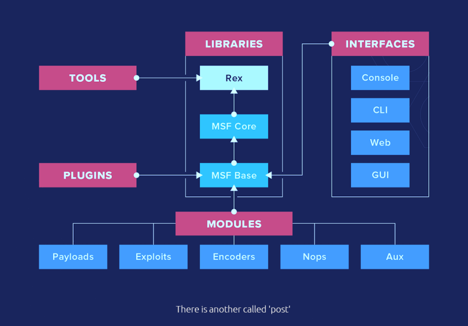

2. Metasploit
Metasploit, an open-source pentesting framework, is a powerful tool utilized by security engineers around the world. Maintained by Rapid 7, Metasploit is a collection of not only thoroughly tested exploits but also auxiliary and post-exploitation tools. We will explore the basics of using this massive framework and a few of the modules it includes.
https://www.offensive-security.com/metasploit-unleashed
COMMANDS
1. We need to initialize the database!
Do it before runninig msfconsole.
$msfdb init
2. View some of the advanced options we can trigger for starting the console.
$msfconsole -h
3. Start the Metasploit console on the command line without showing the banner or any startup information as well.
$msfconsole -q
4. Open Metasploit.
$msfconsole
5. Check the connection to the database.
msf5 > db_status
6. Which type of database does Metasploit 5 use?
Postgresql
7. What is the base command we use for searching?
search
8. Once we've found the module we want to leverage, what command we use to select it as the active module?
use
9. How about if we want to view information about either a specific module or just the active one we have selected?
info
10. Metasploit has a built-in netcat-like function where we can make a quick connection with a host simply to verify that we can 'talk' to it. What command is this?
connect
11. What command do we use to change the value of a variable?
set
12. What command changes the value of a variable globally?
setg
13. How to view the value of single variables?
get
14. How about changing the value of a variable to null/no value?
unset
15. What command can we use to set our console output to save to a file?
spool
16. Leaving a Metasploit console running isn't always convenient and it can be helpful to have all of our previously set values load when starting up Metasploit. What command can we use to store the settings/active datastores from Metasploit to a settings file? This will save within your msf4 (or msf5) directory and can be undone easily by simply removing the created settings file.
save
MODULES
This is the Metasploit Framework Structure. Let's take a quick look through the various modules, their purposes, and some of the commands associated with modules.

1. Which module holds all of the exploit code we will use?
exploit
2. Which module contains the various bits of shellcode we send to have executed following exploitation?
payload
3. Which module is most commonly used in scanning and verification machines are exploitable?
auxiliary
4. One of the most common activities after exploitation is looting and pivoting. Which module provides these capabilities?
post
5. Commonly utilized in payload obfuscation, which module allows us to modify the 'appearance' of our exploit such that we may avoid signature detection?
encoder
6. Which module is used with buffer overflow and ROP attacks?
nop